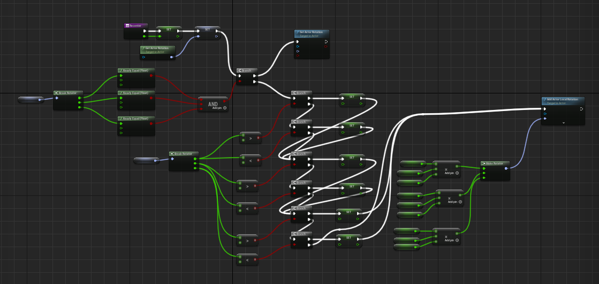

- Project Description
-
Stardog is a demo built in Unreal 5 which showcases mechanics based on the Starfox series of games. These include player movement within screen boundaries, gradual rotation of the player during movement, gradual recentering of the player after movement, shooting, crosshairs to assist with aim, and enemy death animations.
- Project Goals
-
My goal with this project was to become more acquianted with Unreal Engine 5 while simultaneously learning how to create a style of game that I have not worked on before. Following my first project created in Unreal 5, the vast suite of tools provided by the engine convinced me that it was worth learning in more detail. Originally, I intended to complete an entire level based on my concept of a Starfox-like game, however, certain challenges impeded my progress, and as a class project, it needed to be completed within a certain time frame.
One of the main hurdles was my relative inexperience using Unreal and Blueprints. While programming, I needed to set up a series of conditions with OR and AND checks. Typing into the Blueprints search bar, I found no such node to handle this, and performing Google searches for these basic functions somehow did not turn up any results. I was on the verge of programming macros to handle this myself before I discovered by chance that OR and AND nodes did exist; they were just labelled "Boolean Or" and "Boolean And". I tell this story in order to illustrate the types of challenges I encountered while attempting very simple things during this project, and to show that in spite of these frustrations I was able to continue working until I found solutions. Learning a new engine involves becoming acclimated to many new naming conventions such as this, and I am glad to have gotten some of that out of the way during this project. While working on this project I also grew more comfortable with the use of visual scripting. In my first Unreal 5 project, I struggled with messy Blueprints functions that could be very difficult to return to and understand. In this project, I became much better at pre-planning layouts and organizing Blueprints functions. While building the function shown above, I realized that all of the checks I needed to perform would make the visual very confusing if I did not arrange things properly. In the end, I was able to produce a function whose flow was clear and easy to follow (at least, to my eye) while keeping calculations and variables out of the way.
During this project, I also worked on learning how to configure version control for Unreal projects and focused on being able to create a working executable file. Using Git LFS, I was able to host the project files on Github, which helped me return to stable builds if I accidentally deleted an asset improperly or didn't like the changes I had made to a particular Blueprint. I developed a habit of creating a build of the project before each commit to GitHub in order to help pinpoint changes that produce errors in the build process. The lack of this led to my being unable to produce a build of my first Unreal project, and here I am happy to report that it assisted me in meeting my goal.
- Reflection
-
Though this project did not result in a great deal of content to display, I believe that it was very beneficial for the furthering of my Unreal Engine experience. I intentionally did not use C++ classes in the development of this project because I had done so previously and felt that I liked working with Blueprints the least. However, my prior project taught me the benefits of working in both systems, so I chose Blueprints for development in the hopes that it would help me to become more comfortable with the tool. In the time I spent developing this demo, I learned many of the engine's wrinkles which will serve to expediate development on the next Unreal project I undertake. I came away feeling excited about what I could achieve given the knowledge that I had gained and more time to spend in development.